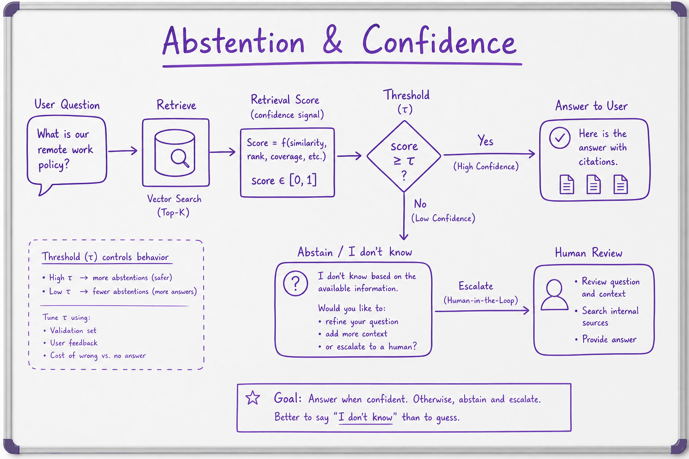
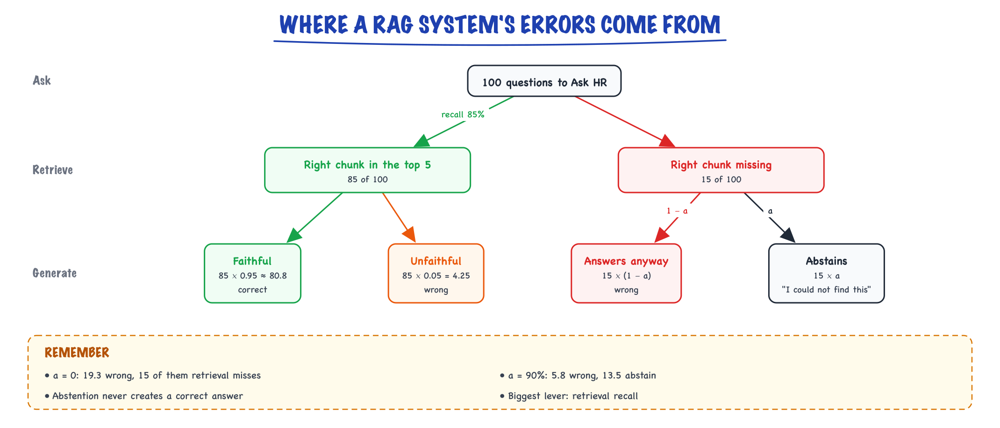

Limits & hallucination // LLM fundamentals
What LLMs get wrong by design, grounding and abstention, and how to design around it.
01 — At a glance
Why LLMs confabulate fluent falsehoods, and production patterns — RAG, citations, faithfulness checks, and abstention — to ground answers in verifiable sources.

Ungrounded generation produces confident errors; grounded pipelines retrieve evidence, require citations, and abstain when retrieval confidence is low.

Abstention: answer only when the retrieval confidence clears a threshold; otherwise say "I don't know" and escalate to a human.
02 — New words
| Word | Meaning |
|---|---|
| Hallucination | Output that is fluent and confident but not supported by the facts or by the context the model was given. |
| Parametric knowledge | What the model "knows" from training, stored implicitly in its weights. Fixed at training time and impossible to inspect directly. |
| Knowledge cutoff | The date after which no text was in the training data. The model cannot know later events and is usually thin on the months just before. |
| Grounding | Supplying the facts in the prompt (from retrieval or a tool) and requiring the answer to rest on them. |
| Faithfulness | Whether every claim in an answer is supported by the provided context. An answer can be faithful and still wrong if the context was wrong. |
| Calibration | Whether stated confidence matches observed accuracy: of all answers given with 80% confidence, about 80% should be right. |
| Abstention | Declining to answer ("I could not find this in the handbook") instead of guessing. |
| Selective prediction | Answering only when a confidence score clears a threshold. Trades coverage (the fraction of questions answered) for accuracy on the answers given. |
| Self-consistency check | Asking the same question several times at non-zero temperature and measuring how often the answers agree. Low agreement signals a guess. |
| Effective context | How much of the context window the model can actually use reliably, which is less than the advertised maximum. |
The lesson
03 — The question
An LLM is a next-token predictor trained to produce text that looks like its training data. Everything it gets wrong "by design" follows from that: it says plausible things rather than true things, knows nothing after its training data ends, sees numbers as chunks of characters, and only attends to what fits in its window. These are properties to engineer around, not bugs a future release will remove.
The questions interviewers ask about it:
- Why do LLMs hallucinate, mechanically, and why does a bigger model not make it go away?
- Does RAG solve hallucination? If not, what fraction of errors is left and where do they come from?
- How do you make a system say "I don't know", and how do you choose when it should?
- How would you detect hallucinations in production, where nobody has the right answer to hand?
The running example. Northwind, a 3,000-person company, ships "Ask HR", an assistant over its 400-page employee handbook. An employee asks:
"How many weeks of paid parental leave do I get in Germany? I'm on a 0.6 part-time contract."
The true answer, from handbook section 7.2, is 20 weeks prorated to 0.6, which is 12 weeks. The policy changed in March from 16 weeks to 20.
04 — Step 1: the model outputs a distribution, not a fact
Ask a bare model, with no handbook in context, to complete "At Northwind, paid parental leave in Germany is". Northwind's handbook was never in the training data, so the model has no memory of the answer. What it has is a strong sense of what numbers usually follow such sentences. Suppose the next-token logits over the plausible numbers are:
| Token | 16 | 12 | 14 | 18 | 20 | 26 |
|---|---|---|---|---|---|---|
| Logit | 2.0 | 1.7 | 1.3 | 1.1 | 1.0 | 0.4 |
| Probability | 0.311 | 0.231 | 0.155 | 0.127 | 0.114 | 0.063 |
The entropy of this distribution is 2.41 bits, roughly a choice among five equal options. For "The capital of France is", a typical distribution puts over 99% on "Paris": under 0.1 bits.
So the model is uncertain about the number. The text it writes is not. Greedy decoding emits "16 weeks", and the rest of the sentence is just as fluent as the Paris answer, because fluency comes from the language around the fact, which the model has seen millions of times. The uncertainty lives in one token; the confidence lives in the other forty. That gap between internal uncertainty and surface confidence is the core of hallucination.
Two consequences follow immediately:
- Lowering temperature does not help. At \(T = 0\) the model says "16" every time. You have made the wrong answer reproducible. (Temperature and sampling are covered in Decoding & sampling.)
- The signal is partly recoverable. If you can see the 0.311 (via logprobs) or estimate it (via repeated sampling, Step 8), you know this answer is a guess.
05 — Step 2: why training rewards guessing
Why does the model not say "I don't know" when its distribution is this flat? Because almost nothing in its training rewarded that.
Pretraining text rarely says "I don't know" after a question, so the model learns answer-shaped continuations. Post-training and most benchmarks grade binary: right scores 1, wrong and "I don't know" both score 0. Under that rule, guessing always wins. If the model's best guess is right with probability \(p\), then
\[ \mathbb{E}[\text{score} \mid \text{guess}] = p \cdot 1 + (1 - p) \cdot 0 = p \;>\; 0 = \mathbb{E}[\text{score} \mid \text{abstain}] \]for any \(p > 0\). A model optimised against such graders learns to bluff, exactly as a student does on a multiple-choice exam with no negative marking.
Now add a penalty \(c\) for a wrong answer. Guessing is worth \(p - c(1-p)\), abstaining is worth 0, so guessing only pays when
\[ p > \frac{c}{1 + c} \]For our "16 weeks" guess with \(p = 0.311\):
| Penalty for a wrong answer \(c\) | Break-even confidence \(c/(1+c)\) | Expected score of guessing "16" | Best action |
|---|---|---|---|
| 0 | 0 | +0.311 | Guess |
| 1 | 0.50 | −0.378 | Abstain |
| 3 | 0.75 | −1.755 | Abstain |
| 9 | 0.90 | −5.888 | Abstain |
This table is the abstention story in miniature (Step 8 returns to it). The product decides \(c\): wrong answers are cheap in a trivia game and expensive when someone plans their leave around them.
Why a bigger model does not fix it.
Some facts appear many times in training data (the capital of France); others appear once (one company's policy, one person's birthday, one paper's exact result). Theoretical work on calibrated language models argues that, for arbitrary facts with no pattern to learn, the rate of hallucination is bounded below by roughly the fraction of such facts seen exactly once in training (Kalai & Vempala, 2023). From one sighting, a model cannot tell a real fact from a plausible one it never saw. Scale helps with facts seen often; it does not help with the long tail, and your company's internal data is all long tail.
06 — Step 3: the kinds of wrong
"Hallucination" covers several failures with different fixes. Naming them precisely is the first thing that separates a strong interview answer.
| Kind | "Ask HR" example | Root cause | Primary fix |
|---|---|---|---|
| Fabrication (extrinsic, no context) | "16 weeks" with no handbook in the prompt | Fact not in parametric knowledge; model guesses | Grounding (retrieval or tool) |
| Stale knowledge | "16 weeks", correct before March | Knowledge cutoff | Grounding on a live source; dates in context |
| Unfaithful to context (intrinsic) | Section 7.2 in context says 20, the answer says 16 | Prior from training overrides the context | Quote-and-cite; faithfulness check |
| Unsupported addition (extrinsic, with context) | "20 weeks, and you can extend by 4 unpaid" (not in the handbook) | Model fills gaps with plausible general knowledge | "Only from the sources" plus claim-level verification |
| Reasoning or arithmetic error | Retrieves 20 weeks, computes 0.6 × 20 = 14 | Numbers are tokens, not quantities (Step 5) | Do the arithmetic in code |
| Blend | "20 weeks, as set by the German Federal Parental Allowance Act" (mixes company policy with a real statute) | Two true things fused into one false one | Citation of the exact supporting span |
The blend is the most dangerous: every component checks out on its own, and models more often recombine than invent from nothing.
07 — Step 4: the knowledge cutoff, and the thin months before it
Anything after the training cutoff, including Northwind's March policy change, is unknown to the weights. Two less obvious effects matter more.
The months before the cutoff are thinly covered. The web keeps writing about an event for years after it happens: news, then analysis, then references in other articles. At training time, last month's events have only their first wave of text. So the model is weaker on that period than on two years earlier, and often unsure of its own cutoff.
The model does not know what it does not know. Asked about a library's version 3 API released after the cutoff, a model trained on thousands of version 2 examples writes version 2 code with version-3-sounding names.
The design rule: anything that changes (policies, prices, people in roles, versions, today's date) must come from context, never from weights. Put the current date in the system prompt. Route questions with time-sensitive words to retrieval or a tool. Store a "last updated" date with every retrieved chunk so that both the model and the user can see how fresh the source is.
08 — Step 5: numbers are tokens, so arithmetic is pattern-matching
The model never sees the number 1,234,567. It sees tokens. With the cl100k_base tokenizer (used by several OpenAI models), the strings in our example split like this:
| Text | Tokens |
|---|---|
1234567 | 123 | 456 | 7 |
20 weeks x 0.6 = 12 weeks | 20 | weeks | x | | 0 | . | 6 | = | | 12 | weeks |
strawberry (no leading space) | str | aw | berry |
strawberry (with leading space) | strawberry (one token) |
Three-digit chunks do not line up with place value: 1234567 is chunked from the left as 123|456|7, while place value groups from the right as 1|234|567. To multiply \(1234567 \times 89 = 109{,}876{,}463\), the model has to produce the right output tokens by learned pattern, carrying digits across chunk boundaries it was never told about. Small, common calculations ("0.6 × 20") are seen often enough to be reliable; long or unusual ones are not. Counting letters fails for the same reason: " strawberry" is one token, and the model has no direct view of its letters.
Modern models, especially reasoning models that write out steps, are much better at arithmetic, but "better" is not "exact", and the errors look like correct answers. The fix is architectural: the model extracts, code computes. "Ask HR" should retrieve weeks = 20 and fte = 0.6, and a function should return 12. (This pattern is developed in Hybrid LLM patterns.)
09 — Step 6: context limits, and why more context is not free
Why not put the whole handbook in the prompt? 400 pages at about 500 words a page is 200,000 words; at roughly 1.33 tokens per word, about 267,000 tokens. That does not fit some windows, and where it fits, three costs remain.
- Money and latency. At an illustrative $3 per million input tokens, each question costs about $0.80 in input alone. Retrieving five 500-token chunks costs about 2,500 tokens, roughly $0.0075: about a hundred times cheaper. (Prompt caching narrows the gap for a fixed document; see Cost & latency.)
- Position effects. Models use information at the start and end of a long context more reliably than information in the middle; accuracy on a fact can fall noticeably when it is buried mid-context (Liu et al., 2023, "Lost in the Middle"). Newer models have reduced this, not removed it.
- Distractors. The handbook also describes US parental leave (12 weeks, unpaid), the old 16-week German policy in a change log, and a "parental leave for adoption" section. Every near-miss is a candidate for a blended answer.
The effective context, what the model uses reliably, is smaller than the advertised window. Retrieve tightly, put key material first or last, and remove superseded text from the index rather than hoping the model ignores it. How the window works mechanically is in Tokens, context & cost; managing it in long-running agents is in Memory & context engineering.
10 — Step 7: grounding moves the error, it does not remove it
Now build "Ask HR" properly: retrieve the most relevant handbook chunks and instruct the model to answer only from them. This is the right architecture (detailed in The RAG pipeline). It changes the error budget; it does not zero it. Put numbers on each stage, using rates of the kind you would measure on your own evaluation set:
- Retrieval recall: the right chunk (section 7.2) is in the top five for 85% of questions.
- Faithfulness: when the right chunk is present, the answer is correct and supported 95% of the time.
- Abstention when missing: when the right chunk is absent, how often the model says "I could not find this" rather than answering from memory or from a distractor.

Per 100 questions with 85% retrieval recall and 95% faithfulness, about 80.8 are answered correctly whatever else happens; abstaining when the chunk is missing (rate a) only decides how many of the other 19.3 are wrong.
Correct answers are \(0.85 \times 0.95 = 0.8075\) regardless of abstention. What abstention changes is the split of the remaining 19%:
| Abstains when chunk missing | Correct | Wrong | Abstained |
|---|---|---|---|
| 0% (always answers) | 80.8% | 19.3% | 0% |
| 60% | 80.8% | 10.3% | 9.0% |
| 90% | 80.8% | 5.8% | 13.5% |
The wrong row is \(0.85 \times 0.05 + 0.15 \times (1 - a)\), where \(a\) is the abstention rate when the chunk is missing. Two lessons fall out:
- Most remaining errors come from retrieval misses, not from the generator. With always-answer behaviour, 15 of the 19.3 points are questions where the right chunk never arrived. Improving recall (hybrid search, reranking, better chunking) is usually the highest-leverage fix for hallucination in a RAG system.
- Abstention converts wrong answers into "I don't know"s. It never creates correct answers. Whether that trade is worth it is the penalty question from Step 2.
11 — Step 8: abstention as a threshold you choose
To abstain deliberately, you need a confidence score per answer and a threshold. Sources of a score, roughly in order of reliability:
- Retrieval score of the best chunk. Cheap, available before generation; catches "nothing relevant found".
- Self-consistency: sample the answer five times at temperature around 0.7 and measure agreement. Five times "12 weeks" means no guessing; 16, 12, 16, 20, 14 (agreement 40%) means guessing. Works with any API, at five times the generation cost.
- Token log-probabilities of the key tokens (the "12"). Often overconfident after instruction tuning; calibrate first.
- A verifier: a second call or a small natural-language inference (NLI) model that checks whether the answer is entailed by the retrieved text.
Now pick the threshold. Take ten labelled questions from the "Ask HR" dev set, each with a combined confidence score and whether the answer was correct. Say a wrong answer costs 5 (an employee acts on it) and an abstention costs 1 (they email HR instead):
| Threshold | Answered (coverage) | Accuracy on answered | Wrong | Abstained | Cost = 5·wrong + 1·abstained |
|---|---|---|---|---|---|
| 0 (always answer) | 10 (100%) | 60% | 4 | 0 | 20 |
| 0.50 | 7 (70%) | 71% | 2 | 3 | 13 |
| 0.70 | 5 (50%) | 80% | 1 | 5 | 10 |
| 0.82 | 4 (40%) | 100% | 0 | 6 | 6 |
(The ten confidences are 0.95, 0.91, 0.88, 0.82, 0.74, 0.66, 0.58, 0.49, 0.41, 0.30, with the 0.74, 0.58, 0.41 and 0.30 answers wrong.) The cost-minimising threshold is 0.82, which answers only 40% of questions. Make wrong answers cheaper and the best threshold falls; Check yourself works one case. The threshold is a product decision expressed as a number, and the curve of accuracy against coverage is what you show the product owner.
Ten examples is far too few. With ten points the "best" threshold is mostly noise. In practice you need a few hundred labelled questions, and you should check the chosen threshold on a held-out split. The method is the point here, not the number.
A good abstention is specific: "I couldn't find part-time rules for Germany in the handbook; the closest section is 7.2 (link); HR can confirm." A bare "I don't know" feels broken, and users route around it.
12 — Step 9: detecting hallucination in production
In production there is no answer key, so detection relies on the sources and on internal consistency. Four checks, cheapest first:
- Structural citation check. Require every claim to cite a chunk ID and quote the supporting span. Then verify in code that each quote appears in the cited chunk. Catches fabricated citations and many blends almost free; misses a real quote used for a claim it does not support.
- Entailment check. For each sentence of the answer, ask an NLI model or a judge LLM whether the cited text entails it. Catches unsupported additions; costs an extra call per answer or claim.
- Self-consistency. As in Step 8. Particularly good at catching fabrication when retrieval missed, because guesses vary between samples and grounded facts do not (the idea behind SelfCheckGPT, Manakul et al., 2023).
- User signals and sampling for review. Thumbs-down, escalations to HR, and a weekly human review of a random sample stratified by confidence. This is how you learn the true rates Step 7 assumed.
Each check has a false-positive rate, so route rather than block: a failed citation check triggers one regeneration with the failure quoted back, and if it fails again the system abstains. How to build these into an eval harness is covered in Evaluating LLM features; the metrics themselves (faithfulness, answer relevance) in Evaluation metrics.
13 — The worked example, end to end
"Ask HR" answering the running question with every defence in place:
- Freshness and routing. The system prompt includes today's date. The question mentions a policy, so it goes to retrieval, never to a bare model call. No "16 weeks from memory".
- Retrieval. Hybrid search plus a reranker over the handbook, with the superseded change-log entry removed from the index. Section 7.2 comes back first with a reranker score of 0.91.
- Extraction, not computation. The model is asked for JSON:
{"weeks": 20, "prorated": true, "source": "hb-7.2", "quote": "20 weeks of paid parental leave, prorated for part-time contracts"}. Code computes \(20 \times 0.6 = 12\). - Verification. The quote check passes (the span is in hb-7.2). The entailment check passes.
- Confidence and threshold. Reranker score 0.91 and five-sample agreement of 1.0 combine above the 0.82 threshold, so the system answers: "You get 12 weeks: the German policy is 20 weeks of paid leave, prorated for part-time contracts (handbook 7.2, updated March)."
Had retrieval missed section 7.2, the best chunk would have scored low, samples would have disagreed, and the system would have abstained with a link to HR. The goal is not a model that is never wrong but a system whose wrong answers are rare, cheap and visible.
14 — A decision guide
| Symptom | Likely cause | First fix | Then |
|---|---|---|---|
| Confident answers about your own data that are invented | No grounding | Retrieval or a lookup tool | Cite-and-verify |
| Grounded system still wrong on many questions | Retrieval recall | Measure recall@k; hybrid search, reranking, chunking | Abstain on low retrieval score |
| Right chunk retrieved, answer contradicts it | Prior overrides context; distractors | Quote-then-answer; remove superseded docs | Entailment check |
| Wrong totals, counts, dates | Token-level arithmetic | Model extracts, code computes | Unit tests on the code path |
| Outdated answers | Knowledge cutoff | Date in prompt; route time-sensitive questions to tools | Freshness metadata on chunks |
| Quality falls as conversations or documents grow | Effective context smaller than window | Retrieve tighter; put key material first or last | Summarise or compact history |
| Wrong answers are costly, some abstention is acceptable | Always-answer behaviour | Confidence score plus a cost-chosen threshold | Useful abstention message with escalation |
15 — In code: thresholds, agreement and citation checks
import re from collections import Counter # 1. Pick an abstention threshold from a labelled dev set by expected cost. def best_threshold(conf, correct, cost_wrong=5.0, cost_abstain=1.0): best = None for t in sorted(set(conf)) + [1.01]: # 1.01 = "always abstain" cost = sum(cost_wrong * (1 - ok) if c >= t else cost_abstain for c, ok in zip(conf, correct)) if best is None or cost < best[1]: best = (t, cost) return best conf = [0.95, 0.91, 0.88, 0.82, 0.74, 0.66, 0.58, 0.49, 0.41, 0.30] correct = [1, 1, 1, 1, 0, 1, 0, 1, 0, 0] print(best_threshold(conf, correct)) # (0.82, 6.0) # 2. Self-consistency: sample the same question several times, measure agreement. def agreement(answers): norm = [re.sub(r"\W+", " ", a).strip().lower() for a in answers] top, n = Counter(norm).most_common(1)[0] return top, n / len(norm) print(agreement(["16 weeks", "12 weeks", "16 weeks", "20 weeks", "14 weeks"])) # ('16 weeks', 0.4) print(agreement(["20 weeks", "20 weeks.", "20 Weeks", "20 weeks", "20 weeks"])) # ('20 weeks', 1.0) # 3. Citation check: every quoted span must appear verbatim in the cited chunk. def verify(citations, chunks): squash = lambda s: re.sub(r"\s+", " ", s).strip().lower() return [c for c in citations if c["chunk"] not in chunks or squash(c["quote"]) not in squash(chunks[c["chunk"]])] chunks = {"hb-7.2": "Employees in Germany receive 20 weeks of paid parental leave, " "prorated for part-time contracts."} cites = [{"chunk": "hb-7.2", "quote": "20 weeks of paid parental leave"}, {"chunk": "hb-7.2", "quote": "26 weeks for the second child"}, {"chunk": "hb-9.1", "quote": "anything"}] print(len(verify(cites, chunks)), "unsupported citations") # 2 unsupported citations
The three functions are the skeleton of a production guard: best_threshold runs offline on a labelled set, agreement and verify run on every live answer. The first call reproduces the 0.82 threshold and cost of 6 from Step 8; the second shows the scattered guesses from Step 1 scoring 0.4 agreement against a grounded answer's 1.0.
Quick reference
16 — What & Why
Hallucination = fluent output not supported by facts or context. Fundamental to generative LMs (they optimize plausibility, not truth). Mitigate with retrieval, tools, and abstention — not bigger models alone.
17 — Core Concepts
| Term | Definition | Gotcha |
|---|---|---|
| Hallucination | False but confident claim | Not always factual errors |
| Grounding | Tie answer to source evidence | RAG + citations |
| Faithfulness | Answer entailed by context | Eval with LLM judge |
| Abstention | Decline when uncertain | Better than wrong |
| Confabulation | Fabricated citations/names | Common in legal/medical |
18 — API Surface
system = """Answer ONLY from context. Cite [chunk_id]. If insufficient, say I don't know.""" # Post-check: faithfulness_score(answer, chunks) >= 0.8
19 — When to Use / When NOT
| Pattern | Use | Skip |
|---|---|---|
| RAG + cite | Factual Q&A | Creative writing |
| Tool lookup | Live data (stock, weather) | Static FAQ |
| Abstention | Low retrieval score | Always-answer UX |
| Fine-tune only | Style | Fresh facts |
20 — Architecture
Query -> Retrieve top-k -> Rerank -> Prompt with chunks
-> LLM (cite-only instruction) -> Faithfulness check -> User21 — Deep Dive: Why Models Hallucinate
Training on internet text with errors; next-token objective rewards plausible continuations; no built-in fact verifier; parametric memory is stale and incomplete.
22 — Deep Dive: RAG Grounding

Retrieve, rerank, inject chunks with IDs; LLM must cite sources.
See The RAG pipeline for full pipeline. Hybrid search + reranker improves chunk quality. Low recall = guaranteed hallucination.
23 — Deep Dive: Citations & Attribution
Require [doc_id:chunk] in output. UI links to source spans. Post-validate cited IDs exist in retrieved set. Penalize uncited factual claims in eval.
24 — Deep Dive: Abstention

Threshold on retrieval score triggers 'I don't know' instead of guessing.
Set min similarity score (e.g. 0.72). Secondary LLM: 'Can you answer from context only?' Tune on golden set for precision/recall tradeoff.
25 — Deep Dive: Faithfulness Checks
LLM-as-judge or NLI model compares answer to chunks. Block or regenerate if score low. See Evaluation metrics and Evaluating LLM features.
More detail
26 — What LLMs get wrong (by design)
Knowing the failure modes is what separates a toy from a product. None of these are "bugs to be fixed" — they're properties to design around.
The six below all follow from earlier topics: a next-token predictor (hallucination, weak math), trained on a frozen snapshot (cutoff), called over a stateless API (statelessness), sampled from a distribution (non-determinism), inside a finite window (context limits). The map:
Hallucination
Confident, fluent, wrong output. It predicts plausible text, not true text. Fix: give it real facts (RAG) and verify outputs (critics, citations).
Knowledge cutoff
It only knows training data up to a date; no live events. Fix: tools (web/search) + RAG.
Statelessness
No memory between calls. Fix: resend history; add memory systems (Tools & agents).
Non-determinism
Same prompt can give different answers. Fix: temperature 0, structured outputs, evals.
Weak at exact computation
Counting, math, precise lookups are unreliable. Fix: give it a calculator/code tool — don't make it compute.
Context limits
Finite window; degrades when full. Fix: retrieve tightly, compact, isolate sub-agents.
Now let's do each one properly: what it looks like in the wild, how you detect it (the part everyone skips), and the mitigation pattern.
27 — Hallucination
Real-shaped example. Your research assistant is asked "What did the 2019 Stanford study say about remote work productivity?" It answers: "The 2019 Stanford study by Bloom et al. found a 13% productivity increase among remote workers…" — real author, real finding, wrong year and wrong framing: Bloom's study is from 2015, ran at a Chinese travel agency, and the model has blended it with generic remote-work prose into one confident paragraph. Every sentence is plausible; the citation is unverifiable as stated. This blend-of-true-things failure is far more common (and more dangerous) than pure invention.
Detection. You can't eyeball fluency — verify claims against sources mechanically. The workhorse pattern: force the model to cite, then check the citations exist in the provided context:
import re, json def answer_with_citations(client, question: str, docs: list[str]) -> dict: numbered = "\n\n".join(f"[{i}] {d}" for i, d in enumerate(docs)) resp = client.messages.create( model="claude-sonnet-4-5", max_tokens=800, temperature=0, system=("Answer ONLY from the numbered sources. After each claim, cite like [2]. " "For each citation, also output the exact quote you relied on in a JSON " 'appendix: {"citations": [{"n": 2, "quote": "..."}]}. ' "If the sources don't contain the answer, say so."), messages=[{"role": "user", "content": f"{numbered}\n\nQuestion: {question}"}], ) text = resp.content[0].text appendix = json.loads(text[text.rindex("{\"citations\""):]) # naive parse; harden in prod verified, failed = [], [] for c in appendix["citations"]: n, quote = c["n"], c["quote"].strip() # The quote must actually appear in the cited document (whitespace-tolerant). doc = docs[n] if 0 <= n < len(docs) else "" ok = re.sub(r"\s+", " ", quote) in re.sub(r"\s+", " ", doc) (verified if ok else failed).append(c) return {"answer": text, "grounded": not failed, "failed_citations": failed} # Route on the result: grounded → serve it; not grounded → retry once with the # failures quoted back ("citation [2] does not appear in source 2"), else fall # back to "I couldn't verify this" — never serve the unverified claim silently.
Mitigation stack (in order of leverage): put the real facts in context (RAG — Tool calling); instruct "say 'I don't know' when the sources don't cover it" (models default to answering); verify structurally as above; for high-stakes output, add a second-model critic that gets only the sources and the draft and is asked "list claims not supported by the sources." Temperature 0 does not help — it just makes the hallucination reproducible.
28 — Knowledge cutoff
Real-shaped example. A developer asks your coding assistant how to use a framework's v3 API, released after the model's cutoff. The model — trained on thousands of v2 examples — confidently writes v2 code with v3-sounding names sprinkled in: app.use_middleware(...) where v3 renamed it. It will not say "I don't know v3"; interpolation is silent.
Detection. Anything time-sensitive in the request is a tripwire: dates after the cutoff, words like "latest/current/today," version numbers, prices, people in roles. Route those to tools rather than weights:
import re FRESH_PATTERNS = [ r"\b(latest|current|today|this (week|month|year)|recent|now)\b", r"\bv?\d+\.\d+(\.\d+)?\b", # version numbers r"\b20(2[4-9]|3\d)\b", # years near/after typical cutoffs r"\b(price|cost|release date|CEO|who is)\b", ] def needs_fresh_data(q: str) -> bool: return any(re.search(p, q, re.I) for p in FRESH_PATTERNS) # ponytail: keyword gate; a small classifier prompt if false-positives hurt def answer(q: str): if needs_fresh_data(q): docs = web_search_or_docs_lookup(q) # tool call: live data return answer_with_citations(client, q, docs) # reuse the grounded path return plain_llm_answer(q) # stable knowledge: weights are fine
Mitigation: state the model's cutoff and today's date in the system prompt (models calibrate noticeably better when told both); pin library versions in coding prompts and paste current docs/changelogs; for anything the business depends on being current, retrieval is mandatory, not optional.
29 — Statelessness
Real-shaped example. Turn 1: "I'm allergic to penicillin." Turn 9, after a compaction step that summarized turns 1–5 as "user asked about antibiotics," the assistant suggests amoxicillin — a penicillin. The API didn't forget (it never knew); your history management dropped the one fact that mattered.
Detection. Memory bugs hide in the gap between "what the user said" and "what you resent." Test it explicitly: seed a fact early, burn N turns of filler, then probe. Mitigation: the resend-history discipline from Calling a model, plus — once conversations outgrow the window — a structured memory: extract durable facts (allergies, preferences, IDs) into a store that is always re-injected, and let only the chit-chat be summarized away (Tools & agents). Never let a lossy summarizer be the custodian of safety-critical facts.
30 — Non-determinism
Real-shaped example. Your ticket-triage prompt outputs {"priority": "high"}. Same ticket, next day: {"priority": "High"} — and once a week, "Priority: high" as prose. Downstream code that did json.loads(...)["priority"] == "high" now mis-triages a fraction of tickets, invisibly.
Detection & mitigation. Validate every structured output at the boundary — a schema check is your unit test that runs on 100% of production traffic:
from pydantic import BaseModel, ValidationError from typing import Literal import json class Triage(BaseModel): priority: Literal["low", "medium", "high"] # rejects "High", "urgent", prose… team: Literal["billing", "auth", "infra", "other"] summary: str def triage(client, ticket: str, retries: int = 1) -> Triage: prompt = ("Classify this ticket. Reply with ONLY a JSON object matching " '{"priority": "low|medium|high", "team": "billing|auth|infra|other", ' '"summary": "one sentence"}.\n\nTicket:\n' + ticket) for attempt in range(retries + 1): resp = client.messages.create(model="claude-sonnet-4-5", max_tokens=200, temperature=0, messages=[{"role": "user", "content": prompt}]) raw = resp.content[0].text try: return Triage(**json.loads(raw)) except (json.JSONDecodeError, ValidationError) as e: prompt += f"\n\nYour previous reply was invalid ({e}). JSON only." raise ValueError(f"unparseable triage after {retries+1} attempts: {raw!r}")
Add temperature 0 for stability, provider-native structured-output modes where available, and an eval suite (Multi-agent systems) so you measure the residual variance instead of discovering it in incidents. Remember the earlier caveat: even T=0 is "very stable," not guaranteed — the validator is what turns "usually fine" into "always fine or loudly broken."
31 — Weak at exact computation
Real-shaped example. "Our Q3 revenue was $4,817,230 and Q2 was $4,102,850 — what's the growth rate?" Model: "approximately 17.4%." Correct is 17.41%… no: (4,817,230 − 4,102,850) / 4,102,850 = 17.41%? Compute it: 714,380 / 4,102,850 = 0.17412 → 17.41%. The model often lands near the right answer — 17.4%, 17.8%, "about 18%" — which is worse than being obviously wrong, because near-misses pass review. (And per Tokens, context & cost: it's pattern-matching digit-chunks, not doing division.)
Detection: any digits in the output that the model produced by "reasoning" rather than copying are suspect. Mitigation pattern: the model chooses what to compute; code computes it. In practice that's a calculator/code tool (Prompting) — the model emits {"op": "growth_rate", "curr": 4817230, "prev": 4102850}, your function returns 17.41, and the model narrates the result. Same division of labor for counting, sorting, date math, and anything regex-shaped. If you see an LLM multiplying 6-digit numbers in a production pipeline, that's a design smell, not a prompt-engineering opportunity.
32 — Context limits
Real-shaped example. Your code-review agent works great on small PRs, then silently degrades on a 40-file refactor: the diff is 150k tokens, the review only mentions issues in the first and last files (an earlier topic's "lost in the middle," now in production), and one run simply 400s when the diff plus history exceeds the window. Detection: log input tokens per call and alert at, say, 70% of the window; correlate quality metrics with context fill. Mitigation: budget with code (the context_budget.py pattern from Tokens, context & cost), chunk the work (review per-file, then synthesize), compact history, and isolate subtasks into fresh-context sub-agents (Tools & agents). The rule of thumb: when a task's context wants to exceed ~half the window, split the task instead.
33 — The failure-mode cheat sheet
| Failure | Smells like | Detect with | Mitigate with |
|---|---|---|---|
| Hallucination | Fluent specifics you can't source | Citation-existence check, critic model | RAG, "say I don't know," verification pass |
| Knowledge cutoff | Confident answers about recent things; v2 code for v3 questions | Freshness tripwires (dates, "latest", versions) | Search/RAG tools; state cutoff + today's date; pin versions |
| Statelessness | Contradicts or forgets earlier turns | Seed-fact-then-probe tests | History discipline; structured memory for durable facts |
| Non-determinism | Works 95% of the time; flaky parsers | Schema validation on 100% of outputs; evals | temperature 0, structured outputs, retry-on-invalid |
| Weak computation | Numbers that are almost right | Treat any derived digit as suspect | Calculator/code tools; model routes, code computes |
| Context limits | Great on small inputs, vague on big ones; 400 errors | Token logging, alert at 70% fill; fill-vs-quality curves | Tight retrieval, chunking, compaction, sub-agents |
Mini-scenario: one feature, five failure modes
You ship "Ask our docs" for a SaaS product. Week 1 postmortem: a user asked about a competitor's integration — the docs say nothing, so the model helpfully invented one (hallucination; fix: grounded-answer path with citation check + "not covered" fallback). Another asked "what's new in the latest release?" and got last year's release notes phrased as current (cutoff; fix: freshness gate → changelog retrieval). Support noticed the bot re-asking for the customer's plan tier every message (statelessness; fix: durable-facts memory). The analytics dashboard broke because the bot's JSON feedback records sometimes said "helpful": "yes" instead of true (non-determinism; fix: pydantic at the boundary). And enterprise customers with 900-page doc sets got vaguer answers than trial users with 20 pages (context limits; fix: better retrieval, not bigger stuffing). Five incidents, zero of them "the model is bad" — all five are this topic, unhandled.
The meta-gotcha: silent failure
Traditional software fails loudly — exceptions, 500s, red CI. LLMs fail fluently: wrong answers arrive in perfect prose, invalid JSON is almost valid, forgotten facts just… don't come up. Nothing crashes. The engineering consequence: you must build the alarms yourself — schema validators, citation checks, usage logging, evals — because no stack trace is coming. Assume every unverified output is wrong at some base rate and decide, per feature, whether that rate is acceptable and how you'd know if it doubled.The pattern behind every fix
Two moves solve most of these: (1) put real information in the context (RAG/tools) and (2) make something verify the output (critics/evals/structured validation). Look back at the table: every mitigation is one of those two moves, or the token-budget hygiene that enables them. The whole rest of this guide is variations on those two moves.Exercises
- Induce a hallucination on demand: ask a model (no retrieval) three questions about a product you know well — one answerable from general knowledge, one obscure, one about a feature that doesn't exist. Grade each answer against ground truth, then re-run through
answer_with_citationswith real docs and compare. - Write 10 test questions for the
freshness_gateregexes — 5 that need live data, 5 that don't — and tune the patterns until all 10 route correctly. Note the false-positive you found hardest to fix. - Run the same classification prompt 50 times at default temperature without validation, and count: invalid JSON, valid-but-off-schema, and correct. Repeat with
validated_output.pyand report the delta in downstream-visible errors. - Give a model 10 two-operand arithmetic problems with 6–8 digit numbers at temperature 0. Score exact-match accuracy, then rebuild the flow with a calculator function the model must route through, and re-score.
- Build the seed-fact memory test: insert "my account ID is X-4471" at turn 1, add 15 filler turns, then ask for the ID — once with full history, once with history truncated to the last 8 turns, once with truncation + a durable-facts note re-injected. Report which configurations pass.
In production
34 — Production & Ops
- Sample 1% traces for human audit
- Track abstention rate (too high = bad retrieval)
- User report hallucination button
- Log retrieval scores with answers
36 — Where people get lost
- Believing bigger model won't hallucinate
- RAG with bad chunks (garbage in)
- No citation enforcement
- Penalizing abstention in metrics
- Prompt injection in retrieved docs
- "Hallucination is a bug the next model will fix." It follows from the training objective and from facts seen rarely or never. Bigger models hallucinate less on common knowledge and still guess on your private data.
- "RAG eliminates hallucination." It moves most errors to retrieval misses and adds new ones (unfaithful use of context, distractors). Measure recall and faithfulness separately.
- "Temperature 0 stops hallucination." It makes the most likely answer repeat. If the most likely answer is a guess, you get the same guess every time.
- "Tell the model not to make things up." The instruction helps a little at the margin. It does not give the model knowledge it lacks or a confidence signal it cannot see. Grounding, verification and thresholds do the work.
- "The model will say when it does not know." Training rewarded answering. Abstention has to be designed: a score, a threshold chosen by cost, and a useful fallback message.
- Trusting the model's arithmetic because it is usually right. Usually right with no visible difference when wrong is the worst kind of error. Compute in code.
- "A longer context window means I can skip retrieval." Effective context is smaller than the window, costs scale with every token, and distractors grow with size.
37 — How this connects
Builds on
- Tokens, context & cost — BPE tokenization, the context window, and what every token costs.
- Calling a model — The API call end to end: messages, roles, streaming, tool calls, errors and retries, across providers.
- Decoding & sampling — Greedy, temperature, top-k, top-p and the other knobs, with a live temperature lab.
Where this shows up later
- Prompting techniques — Zero- and few-shot, chain of thought, decomposition, self-critique, injection defence.
- Pitfalls & pro habits — The mistakes that cost the most, and the habits that prevent them.
- Reference architectures — AI system design patterns, a production agent end to end, and architectures by use case.
- Evaluation metrics — Perplexity, BLEU/ROUGE, benchmarks, LLM-as-judge and human evaluation: what each measures.
- Security & guardrails — How agents expand the attack surface, input and output guardrails, and the defences that hold.
- Multimodal LLMs — Vision and audio encoders, how images become tokens, and what multimodal models are good for.
- Interview answer kit — Model answers for the eval and RAG/agent questions, and the follow-ups to prepare.